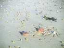
Pornichet, une très grande plage, qui se continue jusqu'au Croisic en passant par la Baule. Au matin, c'est marée basse, les étoiles, pas très brillantes, sont restées en rade sur le sable. Mais malheureusement, la marée sera haute en fin d'après-midi et il faudra se serrer...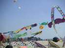
Du vent d'abord de terre, mais ensuite brise de mer pendant les 3 jours. Alors on peut voler, et il y aura de tout : les monstres des Awita ou de AKF, les anglais.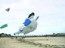
L'énorme éléphant d'Awita profite d'un vent quand même limité (trop de vent dans la trompe, il exploserait sûrement !). Il assure son vol avec ses oreilles porteuses...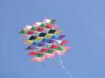
Un joli cerf-volant, croisement d'étagères de Lecornu mais droites, et de flocon, mais pas rond.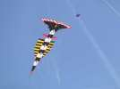
Pierre Fabre est absent (on ne le voit plus jamais, dommage...) mais on revoit toujours son Clou avec plaisir...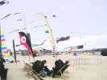
Par ailleurs, ça volera sans discontinuer. C'est Maxime Fellion qui tiendra le micro et assurera autant que c'est possible la coordination du spectacle (mais que les cervolistes sont indisciplinés !).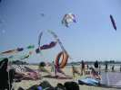
Une arche et une "bâche" d'AKF, entre autres. Maxime (l'autre) assurera aussi la gestion des combats de rokkakus. Là, ça devient dantesque, sauf que DD gagne presque toujours avec son expérience et aussi sa réserve infinie de ficelle en sisal à amarrer les bateaux, mais j'en ai quand même gagné un, na !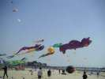
De plus en plus de cerfs-volants montent à l'assaut...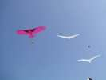
Maxime F. m'intègre au show avec 3 puis 5 de mes oiseaux, tenus en laisse par Impossible ou par les Pirates, merci à eux.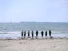
Mais la marée monte toujours et la plage se rétrécit en proportion. Le mini-Mégateam finira les pieds dans l'eau.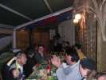
Repas à la pizzeria, dans des extensions en toile plus ou moins chauffées, mais sympa dans l'ensemble.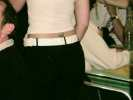
... et les demoiselles sont charmantes, surtout celle au scorpion, dont on aurait bien aimé voir les pattes...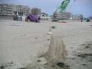
Mais le vent n'est pas toujours faible, il a monté doucement, et il a finalement fallu se jeter sur les gros cerfs-volants pour ne pas qu'ils finissent sur les spectateurs avec les ancrages et les gueuses !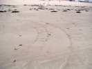
Les chars à kite (faudrait trouver un nom plus in, comme "kite-surf" ! Peut-être kite-char ?) s'en sont mis aussi un coup et les traces de virage montrent des pertes d'adhérence manifestes...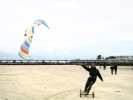
Mais les Pirates se sont éclatés, à des vitesses je vous dis pas. Pas de blessés cette semaine à ma connaissance, mais des crampes dans les cuisses au lever, ça, oui !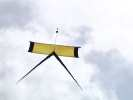
Michel-Marie fera voler nombre de ses créations très stylisées.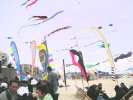
Et au déjeuner, buffet chaud sur la plage. Si on dit aux amis qu'on a pique-niqué sur la plage en Mai dans le vent, ils nous prendront pour des fous ! (à raison, peut-être...).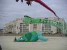
Les anglais martyrisent une pauvre tortue sous prétexte qu'elle veut voler, c'est une honte ! Et sous le regard d'une pieuvre qui n'en croit pas ses yeux exorbités, en plus...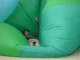
Il y en a même un qui se couche dessus, voire dedans, pauvre bête ! Méfiance, elle pourrait se refermer sur lui et le digérer, ça serait bien fait !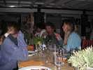
Ensuite, repas à l'intérieur. Il vaut mieux parce que la température a bien baissé...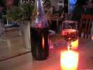
Mais à l'intérieur, l'ambiance reste chaude. Après, pour éliminer, il y aura même un petit vol de nuit improvisé, avec musique sous la tente.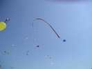
Malgré le caractère déplaisant d'un de ses membres qui vient voler exprès dans mon fil pour me faire dégager de Sa Place (il est connu pour ça... méfiez-vous de Turbulences) et me casse mon Condor, je reconnais que leur arche vole bien et qu'elle peut même voler en altitude comme un cerf-volant !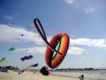